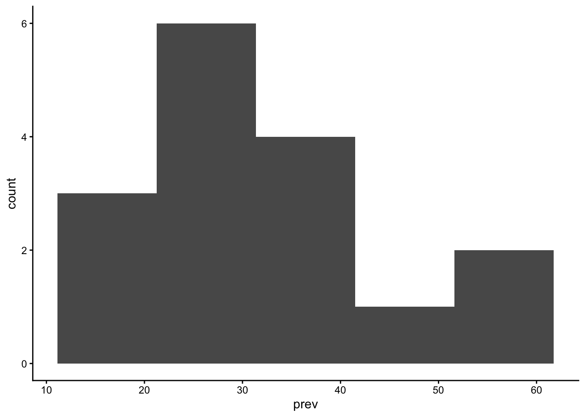
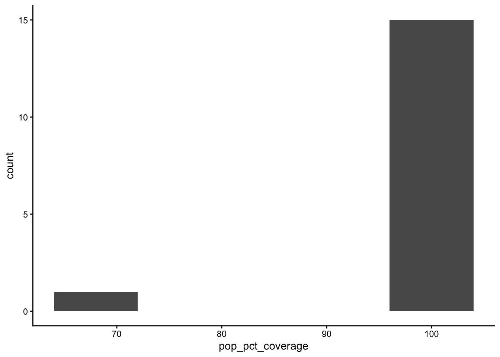
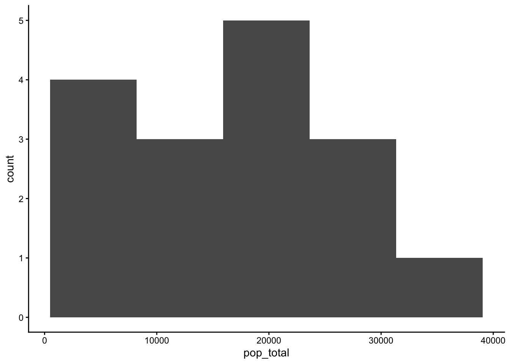
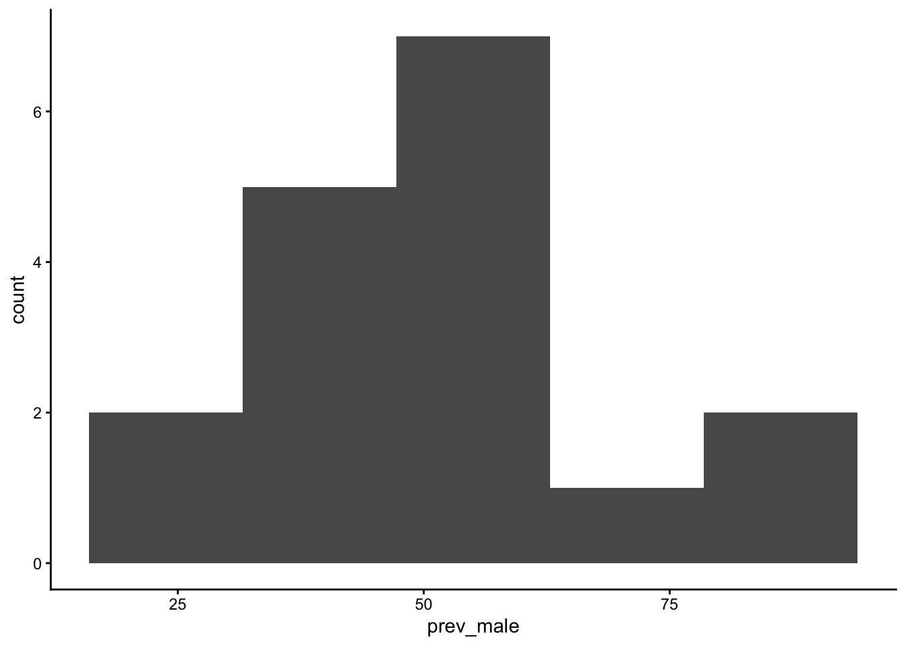
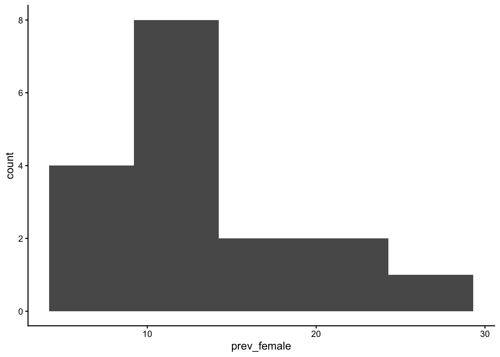
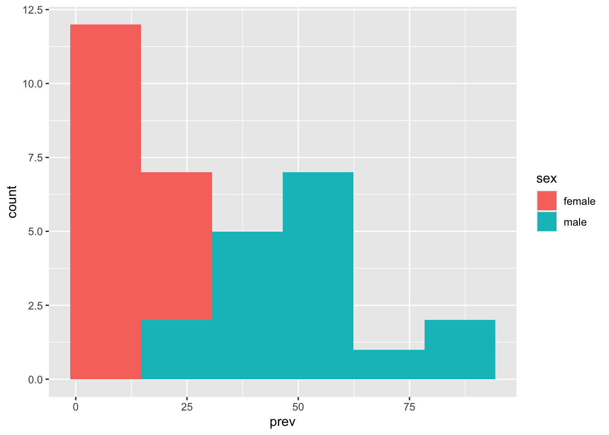
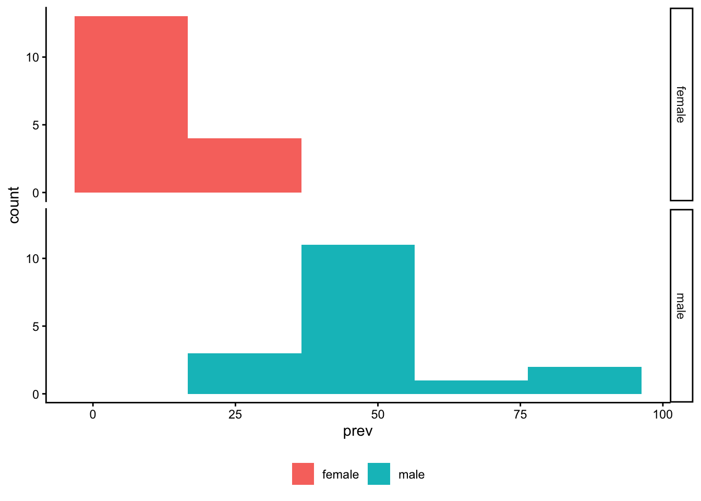
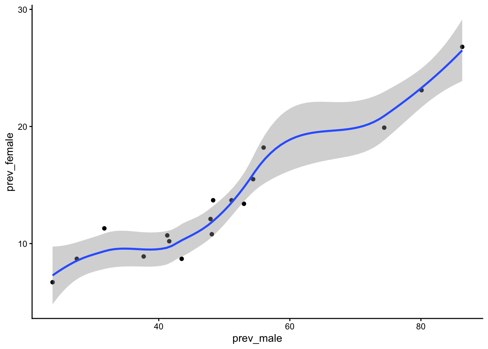
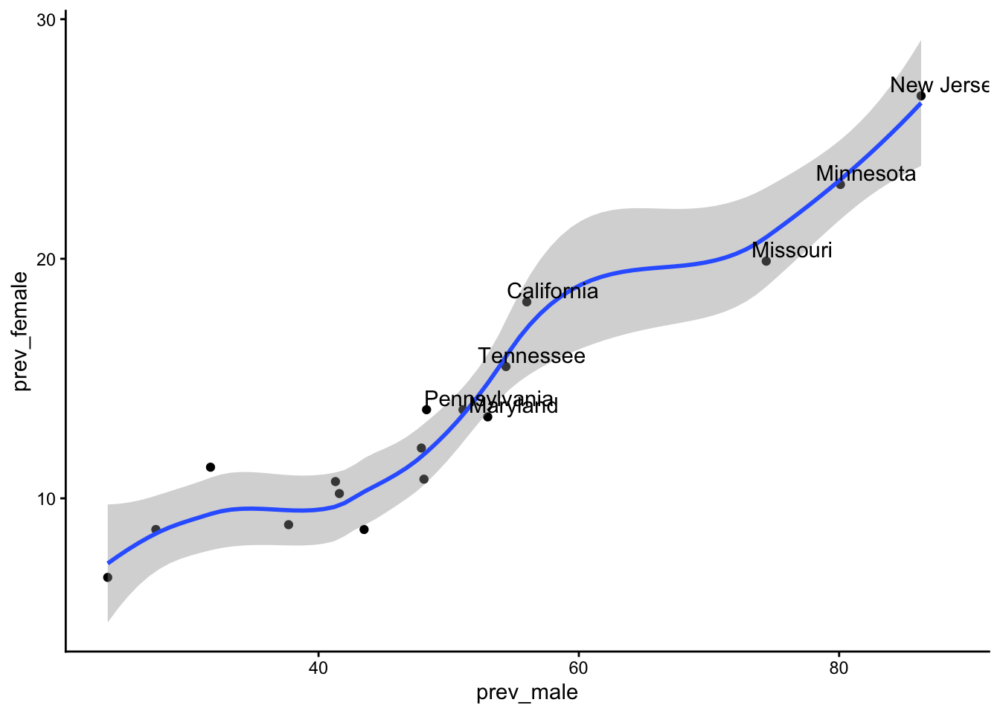
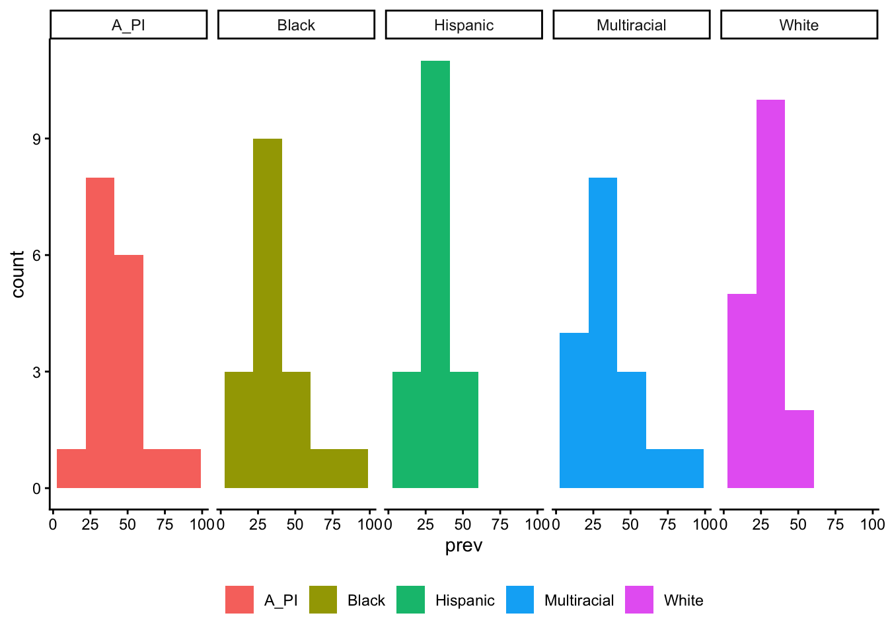

flowchart TD
B(sex) ---> A[ASD_dx]
C(med household income) ---> A
D(race) ---> A
E(location) ---> A
F(age_2022) ---> A
A --- G[intellectual disability]
D ---> G
E ---> G
F ---> G
H(age_dx) ---> A
E ---> I(use of ASD test)
I ---> A
J{health literacy} ---> A
Autism spectrum disorder controversy
2025-11-06

About
This page documents the lab’s work on the question of what factors contribute to the rise in diagnoses of Autism Spectrum Disorder (ASD).
Background
On October 29, 2025, U.S. Secretary of Health and Human Services (HHS) Robert F. Kennedy, Jr. said that there is not “sufficient” evidence to link use of Tylenol (acetaminophen) during pregnancy to autism (Ramaswamy, 2025).
In April, the Centers for Disease Control released a report (Shaw et al., 2025) from the Autism and Developmental Disabilities Monitoring (ADDM) Network (CDC, 2025).
Here is a figure to capture some of the associations:
Autism diagnosis (dx) measures
Shaw et al. (2025) assigned an autism diagnosis to children who met one of the following criteria:
- an ASD diagnostic statement in a comprehensive developmental evaluation, 2) autism special education eligibility, or 3) an ASD ICD-9 code in the 299 range or ICD-10 code of F84.0, F84.3, F84.5, F84.8, or F84.9. Children aged 4 years were classified as having suspected ASD if they did not meet the criteria for ASD but had an evaluator’s suspicion of ASD documented in a comprehensive developmental evaluation.
- Autism Diagnostic Observation Schedule (ADOS), “(ADOS®-2) Autism Diagnostic Observation Schedule, Second Edition” (n.d.)
- Autism Spectrum Rating Scales (ASRS), Naglieri (n.d.)
- Childhood Autism Rating Scale (CARS), “(CARS®2) Childhood Autism Rating Scale, Second Edition” (n.d.)
- Gilliam Autism Rating Scale (GARS), Gilliam (n.d.)
- Social Responsiveness Scale (SRS), “(SRS™-2) Social Responsiveness Scale, Second Edition” (n.d.)
- Autism Diagnostic Interview-Revised (ADI-R), “(ADI®-R) Autism Diagnostic Interview–Revised” (n.d.)
Note
All of the tests are available only to administrators who pay for the testing materials.
Here is a paper that compares the ADOS to the CARS: Park, Yi, Yoon, & Hong (2018).
Autism Speaks promotes this parent-completed survey: “M-CHAT™ - Autism Screening” (2015).
Data by state

Data exploration
The following documents an exploration of the data reported in tables in Shaw et al. (2025).
Code
suppressPackageStartupMessages(library(ggplot2))Download the data from the Google sheet stored here:
Table 1: https://docs.google.com/spreadsheets/d/13XMwkWLzoEZ-laHWRNo2OfK6Te2wctjnXpBhKtMaMkA/edit?gid=0#gid=0
Table 01
Code
if (!dir.exists(params$csv_dir)) {
message("Creating missing `include/csv/`.")
dir.create(params$csv_dir)
}
options(gargle_oauth_email = Sys.getenv("GMAIL_SURVEY"))
table_01 <- googlesheets4::read_sheet("https://docs.google.com/spreadsheets/d/13XMwkWLzoEZ-laHWRNo2OfK6Te2wctjnXpBhKtMaMkA", sheet = "table-01")
readr::write_csv(table_01, file = "include/csv/wilson-2025-table-01.csv")
head(table_01)Code
table_01 <- readr::read_csv(file = "include/csv/wilson-2025-table-01.csv", show_col_types = FALSE)Clean Table 01 names.
Code
# Rename variables
table_01_clean <- table_01 |>
dplyr::rename(
area_desc = "Surveillance area description",
sources = "Types of data sources used*",
pop_pct_coverage = "% population coverage of education data sources†",
cases_pct_avail = "% of cases with records available for abstraction at ≥1 source§",
pop_total = "Total population",
n_ASD = "No. with ASD",
prev_ASD = "ASD prevalence (95% CI)¶"
)Parse the prev_ASD variable.
Code
n_sites <- length(table_01_clean$area_desc)
prev_numbers <- table_01_clean$prev_ASD |>
stringr::str_extract_all(pattern = "[0-9]+.[0-9]{1}") |>
unlist() |>
array(dim = c(n_sites,3))
prev <- prev_numbers[,1] |> as.numeric()
CI_lo <- prev_numbers[,2] |> as.numeric()
CI_hi <- prev_numbers[,3] |> as.numeric()
table_01_clean$prev <- prev
table_01_clean$CI_lo <- CI_lo
table_01_clean$CI_hi <- CI_hiGenerate simple visualizations.
Code
table_01_clean |>
ggplot() +
geom_histogram(aes(x=prev), bins = 5) +
theme_classic()

Code
table_01_clean |>
ggplot() +
geom_histogram(aes(x=pop_pct_coverage), bins = 5) +
theme_classic()

Code
table_01_clean |>
ggplot() +
geom_histogram(aes(x=pop_total), bins = 5) +
theme_classic()

Table 02: Sex & Race
Code
table_02 <- googlesheets4::read_sheet("https://docs.google.com/spreadsheets/d/13XMwkWLzoEZ-laHWRNo2OfK6Te2wctjnXpBhKtMaMkA", sheet = "table-02")
readr::write_csv(table_02, file = "include/csv/wilson-2025-table-02.csv")
head(table_02)Code
table_02 <- readr::read_csv(file = "include/csv/wilson-2025-table-02.csv")Rows: 17 Columns: 13
── Column specification ────────────────────────────────────────────────────────
Delimiter: ","
chr (13): Site, male, female, male-to-female, A/PI, Black, Hispanic, Multira...
ℹ Use `spec()` to retrieve the full column specification for this data.
ℹ Specify the column types or set `show_col_types = FALSE` to quiet this message.Code
# Rename variables
table_02_clean <- table_02 |>
dplyr::rename(
male_female_ratio = "male-to-female",
A_PI = "A/PI",
A_PI_2_white = "A/PI to White",
black_2_white = "Black to White",
hispanic_2_white = "Hispanic to White",
multiracial_2_white = "Multiracial to White"
)
head(table_02_clean)# A tibble: 6 × 13
Site male female male_female_ratio A_PI Black Hispanic Multiracial White
<chr> <chr> <chr> <chr> <chr> <chr> <chr> <chr> <chr>
1 Arizona 48.3… 13.7 … 3.5 (2.6–4.9)** 27.1… —†† 32.2 (2… —†† 33.4…
2 Arkansas 48.1… 10.8 … 4.4 (3.5–5.6)** 51.2… 29.9… 28.9 (2… 24.7 (15.7… 29.5…
3 Califor… 80.1… 23.1 … 3.5 (2.9–4.1)** 56.8… 65.4… 54.1 (4… 67.2 (53.8… 41.4…
4 Georgia 51.1… 13.7 … 3.7 (3.2–4.3)** 35.6… 39.1… 27.7 (2… 26.1 (19.1… 24.0…
5 Indiana 27.5… 8.7 (… 3.2 (2.3–4.2)** 37.7… 15.5… 19.4 (1… —†† 18.2…
6 Maryland 41.3… 10.7 … 3.9 (3.1–4.7)** 31.3… 36.8… 28.6 (2… 29.5 (21.3… 19.3…
# ℹ 4 more variables: A_PI_2_white <chr>, black_2_white <chr>,
# hispanic_2_white <chr>, multiracial_2_white <chr>Code
n_sites <- length(table_02_clean$Site)
prev_male_CI <- table_02_clean$male |>
stringr::str_extract_all(pattern = "[0-9]+.[0-9]{1}") |>
unlist() |>
array(dim = c(n_sites,3))
prev_male <- prev_male_CI[,1] |> as.numeric()
prev_male_CI_lo <- prev_male_CI[,2] |> as.numeric()
prev_male_CI_hi <- prev_male_CI[,3] |> as.numeric()
table_02_clean$prev_male <- prev_male
table_02_clean$prev_male_CI_lo <- prev_male_CI_lo
table_02_clean$prev_male_CI_hi <- prev_male_CI_hi
# The previous work could/should be turned into a function
prev_female_CI <- table_02_clean$female |>
stringr::str_extract_all(pattern = "[0-9]+.[0-9]{1}") |>
unlist() |>
array(dim = c(n_sites,3))
prev_female <- prev_female_CI[,1] |> as.numeric()
prev_female_CI_lo <- prev_female_CI[,2] |> as.numeric()
prev_female_CI_hi <- prev_female_CI[,3] |> as.numeric()
table_02_clean$prev_female <- prev_female
table_02_clean$prev_female_CI_lo <- prev_female_CI_lo
table_02_clean$prev_female_CI_hi <- prev_female_CI_hi
prev_female_CI <- table_02_clean$female |>
stringr::str_extract_all(pattern = "[0-9]+.[0-9]{1}") |>
unlist() |>
array(dim = c(n_sites,3))
prev_female <- prev_female_CI[,1] |> as.numeric()
prev_female_CI_lo <- prev_female_CI[,2] |> as.numeric()
prev_female_CI_hi <- prev_female_CI[,3] |> as.numeric()
table_02_clean$prev_female <- prev_female
table_02_clean$prev_female_CI_lo <- prev_female_CI_lo
table_02_clean$prev_female_CI_hi <- prev_female_CI_hiGenerate simple visualizations for male/female data.
Code
table_02_clean |>
ggplot() +
geom_histogram(aes(x=prev_male), bins = 5) +
theme_classic()

Code
table_02_clean |>
ggplot() +
geom_histogram(aes(x=prev_female), bins = 5) +
theme_classic()

Make longer to enable better comparisons between male and female prevalence rates.
Code
table_02_sex <- table_02_clean |>
dplyr::select(Site, prev_male, prev_female) |>
tidyr::pivot_longer(cols = c("prev_male", "prev_female"),
names_to = "sex") |>
dplyr::mutate(sex = stringr::str_remove(sex, "prev_")) |>
dplyr::rename(prev = "value")Plot data by sex.
Code
table_02_sex |>
ggplot() +
geom_histogram(aes(x = prev, fill = sex), bins = 6)

Code
table_02_sex |>
ggplot() +
geom_histogram(aes(x = prev, fill = sex), bins = 5) +
facet_grid(rows = vars(sex)) +
theme_classic() +
theme(legend.title = element_blank(),
legend.position = "bottom")

Scatterplot data by sex.
Code
table_02_clean |>
ggplot() +
geom_point(aes(x = prev_male, y = prev_female)) +
geom_smooth(aes(x = prev_male, y = prev_female)) +
theme_classic() +
theme(legend.title = element_blank(),
legend.position = "bottom")`geom_smooth()` using method = 'loess' and formula = 'y ~ x'

Add point labels.
Code
table_02_clean |>
dplyr::mutate(high_prev_male = prev_male > mean(prev_male)) |>
dplyr::mutate(labels = ifelse(high_prev_male, Site, NA)) |>
ggplot() +
geom_point(aes(x = prev_male, y = prev_female)) +
geom_smooth(aes(x = prev_male, y = prev_female)) +
geom_text(aes(x = prev_male, y = prev_female, label = labels),
nudge_y = .5, nudge_x = 2) +
theme_classic() +
theme(legend.title = element_blank(),
legend.position = "bottom")`geom_smooth()` using method = 'loess' and formula = 'y ~ x'Warning: Removed 10 rows containing missing values or values outside the scale range
(`geom_text()`).

Clean race/ethnicity.
Code
# asian_pac_isl
A_PI_CI <- table_02_clean$A_PI |>
stringr::str_extract_all(pattern = "[0-9]+.[0-9]{1}") |>
unlist() |>
array(dim = c(n_sites,3))
prev_A_PI <- A_PI_CI[,1] |> as.numeric()
prev_A_PI_CI_lo <- A_PI_CI[,2] |> as.numeric()
prev_A_PI_CI_hi <- A_PI_CI[,3] |> as.numeric()
table_02_clean$prev_A_PI <- prev_A_PI
table_02_clean$prev_A_PI_lo <- prev_A_PI_CI_lo
table_02_clean$prev_A_PI_hi <- prev_A_PI_CI_hi
# Black
Black_CI <- table_02_clean$Black |>
stringr::str_extract_all(pattern = "[0-9]+.[0-9]{1}") |>
unlist() |>
array(dim = c(n_sites,3))
prev_Black <- Black_CI[,1] |> as.numeric()
prev_Black_CI_lo <- Black_CI[,2] |> as.numeric()
prev_Black_CI_hi <- Black_CI[,3] |> as.numeric()
table_02_clean$prev_Black <- prev_Black
table_02_clean$prev_Black_CI_lo <- prev_Black_CI_lo
table_02_clean$prev_Black_CI_hi <- prev_Black_CI_hi
# Hispanic
Hispanic_CI <- table_02_clean$Hispanic |>
stringr::str_extract_all(pattern = "[0-9]+.[0-9]{1}") |>
unlist() |>
array(dim = c(n_sites,3))
prev_Hispanic <- Hispanic_CI[,1] |> as.numeric()
prev_Hispanic_CI_lo <- Hispanic_CI[,2] |> as.numeric()
prev_HispanicCI_hi <- Hispanic_CI[,3] |> as.numeric()
table_02_clean$prev_Hispanic <- prev_Hispanic
table_02_clean$prev_Hispanic_CI_lo <- prev_Hispanic_CI_lo
table_02_clean$prev_Hispanic_CI_hi <- prev_HispanicCI_hi
# White
White_CI <- table_02_clean$White |>
stringr::str_extract_all(pattern = "[0-9]+.[0-9]{1}") |>
unlist() |>
array(dim = c(n_sites,3))
prev_White <- White_CI[,1] |> as.numeric()
prev_White_CI_lo <- White_CI[,2] |> as.numeric()
prev_White_CI_hi <- White_CI[,3] |> as.numeric()
table_02_clean$prev_White <- prev_White
table_02_clean$prev_White_CI_lo <- prev_White_CI_lo
table_02_clean$prev_White_CI_hi <- prev_White_CI_hi
# Multiracial
Multiracial_CI <- table_02_clean$Multiracial |>
stringr::str_extract_all(pattern = "[0-9]+.[0-9]{1}") |>
unlist() |>
array(dim = c(n_sites,3))
prev_Multiracial <- Multiracial_CI[,1] |> as.numeric()
prev_Multiracial_CI_lo <- Multiracial_CI[,2] |> as.numeric()
prev_Multiracial_CI_hi <- Multiracial_CI[,3] |> as.numeric()
table_02_clean$prev_Multiracial <- prev_Multiracial
table_02_clean$prev_Multiracial_CI_lo <- prev_Multiracial_CI_lo
table_02_clean$prev_Multiracial_CI_hi <- prev_Multiracial_CI_hiSelect race data and make a long data frame for plotting.
Code
table_02_race <- table_02_clean |>
dplyr::select(Site, prev_A_PI, prev_Black,
prev_Hispanic, prev_White, prev_Multiracial) |>
tidyr::pivot_longer(cols = c("prev_A_PI", "prev_Black",
"prev_Hispanic", "prev_White", "prev_Multiracial"),
names_to = "race") |>
dplyr::mutate(race = stringr::str_remove(race, "prev_")) |>
dplyr::rename(prev = "value")Code
table_02_race |>
ggplot() +
geom_histogram(aes(x = prev, fill = race), bins = 5) +
facet_grid(cols = vars(race)) +
theme_classic() +
theme(legend.title = element_blank(),
legend.position = "bottom")

Code
table_02_race |>
ggplot() +
geom_boxplot(aes(x = prev, fill = race), bins = 5) +
facet_grid(cols = vars(race)) +
theme_classic() +
theme(legend.title = element_blank(),
legend.position = "bottom")Warning in geom_boxplot(aes(x = prev, fill = race), bins = 5): Ignoring unknown
parameters: `bins`
References
(ADI®-R) Autism Diagnostic Interview–Revised. (n.d.). Retrieved November 6, 2025, from https://www.wpspublish.com/adi-r-autism-diagnostic-interviewrevised.html
(ADOS®-2) Autism Diagnostic Observation Schedule, Second Edition. (n.d.). Retrieved November 6, 2025, from https://www.wpspublish.com/ados-2-autism-diagnostic-observation-schedule-second-edition
(CARS®2) Childhood Autism Rating Scale, Second Edition. (n.d.). Retrieved November 6, 2025, from https://www.wpspublish.com/cars-2-childhood-autism-rating-scale-second-edition.html
CDC. (2025, June 10). Autism and Developmental Disabilities Monitoring (ADDM) network. Retrieved November 6, 2025, from https://www.cdc.gov/autism/addm-network/index.html
Gilliam, J. E. (n.d.). GARS-3 - Gilliam Autism Rating Scale. Retrieved November 6, 2025, from https://www.pearsonassessments.com/en-us/Store/Professional-Assessments/Behavior/Gilliam-Autism-Rating-Scale-%7C-Third-Edition/p/100000802?srsltid=AfmBOoqDkBK9lPtJC1cf45g5u71bUWlFP3-ReJXBXwsujJdd23JLcn43
M-CHAT™ - Autism Screening. (2015, February 20). Retrieved November 13, 2025, from https://www.mchatscreen.com/
Naglieri, J. A. (n.d.). Autism Spectrum Rating Scales. Retrieved November 6, 2025, from https://www.pearsonassessments.com/en-us/Store/Professional-Assessments/Behavior/Autism-Spectrum-Rating-Scales/p/100000354?srsltid=AfmBOoqqodME3hIhB_eJ4QsHX15IMhqHlubjSZCb3_hj7JCQeJYqFtgX
Park, H. S., Yi, S. Y., Yoon, S. A., & Hong, S.-B. (2018). Comparison of the autism diagnostic observation schedule and childhood autism rating scale in the diagnosis of autism spectrum disorder: A preliminary study. Journal of Korean Academy of Child and Adolescent Psychiatry, 29, 172–177. https://doi.org/10.5765/jkacap.180015
Ramaswamy, S. V. (2025, October 29). Health secretary RFK jr. Says there’s ’not sufficient’ proof to show tylenol causes autism. USA Today. USA TODAY. Retrieved from https://www.usatoday.com/story/news/politics/2025/10/29/health-chief-insufficient-data-tylenol-causes-autism/86972118007/
Shaw, K. A., Williams, S., Patrick, M. E., Valencia-Prado, M., Durkin, M. S., Howerton, E. M., … Maenner, M. J. (2025). Prevalence and early identification of autism spectrum disorder among children aged 4 and 8 years - autism and developmental disabilities monitoring network, 16 sites, united states, 2022. MMWR Surveillance Summaries, 74, 1–22. https://doi.org/10.15585/mmwr.ss7402a1
(SRS™-2) Social Responsiveness Scale, Second Edition. (n.d.). Retrieved November 6, 2025, from https://www.wpspublish.com/srs-2-social-responsiveness-scale-second-edition.html